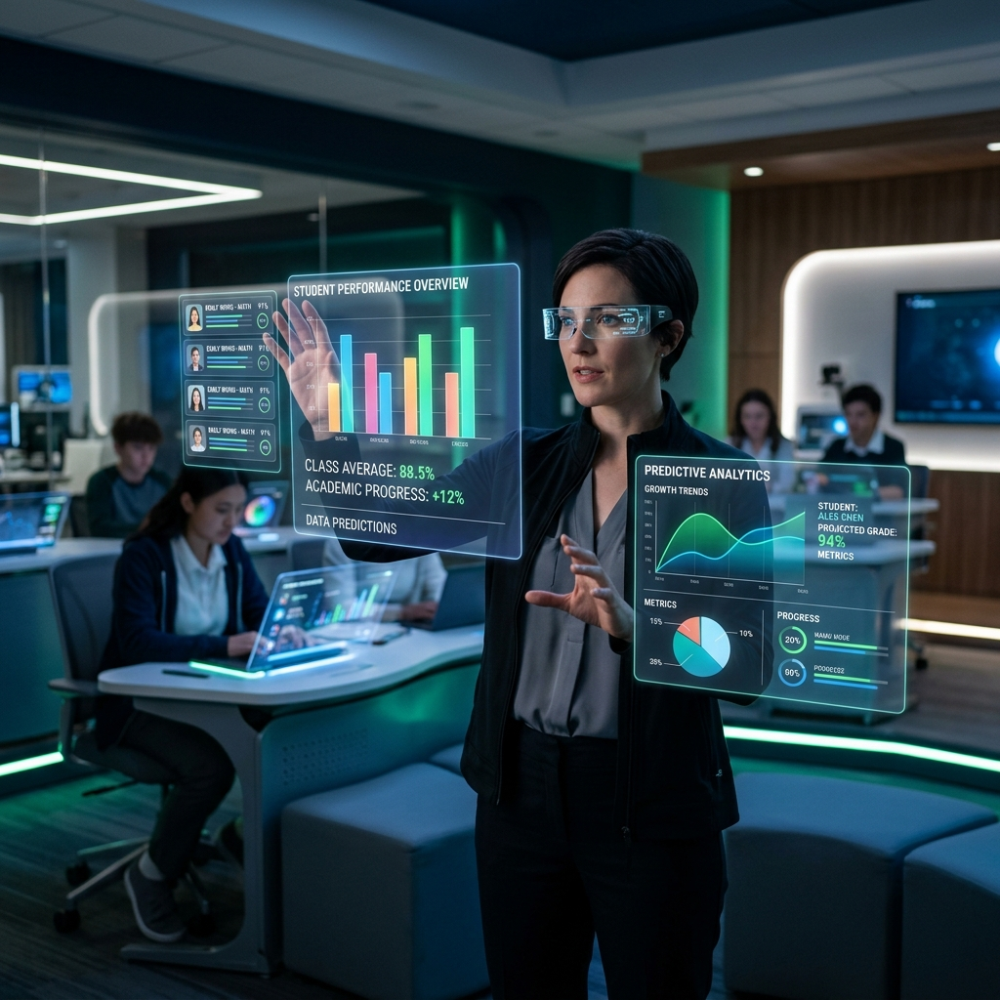

Predecimos el riesgo de no entrega de tareas mediante Inteligencia Artificial explicable. Empoderamos a los educadores con simulaciones interactivas e interfaces inmersivas de Realidad Aumentada (RA).
La identificación oportuna del rezago en la entrega de tareas escolares mediante el uso estratégico de variables clave y modelado supervisado.
Los docentes y centros educativos enfrentan la dificultad de monitorear proactivamente el cumplimiento de los estudiantes. Mediante la recolección de tres variables clave —porcentaje de asistencia general, historial previo de tareas entregadas y si se envió un recordatorio institucional— nuestro sistema predice el comportamiento académico futuro del alumno.
Esto permite no solo enviar alertas preventivas, sino estudiar el impacto relativo de las variables. Así, descubrimos que los recordatorios incrementan el éxito académico sustancialmente y que la asistencia es un pilar fundamental del cumplimiento.
La metodología estructurada que guía cada etapa del desarrollo del proyecto para asegurar la calidad técnica y el éxito pedagógico.
Definición del objetivo: predecir si un estudiante entregará o no la tarea para reducir el fracaso escolar y activar alertas preventivas.
Exploración del dataset simulado de 24 estudiantes. Análisis de correlación de Pearson y diferencias promedio de asistencia.
Ajuste de particiones (70/30). Estandarización de las variables cuantitativas numéricas con StandardScaler para estabilizar los coeficientes.
Ajuste de Regresión Logística para clasificar la entrega, y de Regresión Lineal tanto para predecir cumplimiento continuo como para el análisis comparativo del LPM.
Cálculo de métricas. Validación del 100% de exactitud (Accuracy) en clasificación y evaluación de R² del 98.5% en regresión lineal sobre el set de prueba.
Integración en una aplicación interactiva Streamlit, despliegue en GitHub y propuesta de monitoreo mensual para detectar deriva de concepto (concept drift).
Construidos y validados en el cuaderno .ipynb bajo la metodología CRISP-ML.
Modelo de clasificación binaria que calcula la probabilidad del evento (Entregó = 1) limitando la salida al rango [0, 1] mediante la función sigmoide.
Modelo predictivo para predecir variables continuas o estimar probabilidades lineales (LPM). En este proyecto se utilizó para estimar el historial de tareas acumulado.
Ejecuta y explora las predicciones del modelo de Inteligencia Artificial (Regresión Logística y Regresión Lineal) ajustando las métricas en la barra lateral.
*Nota: La visualización requiere que el servidor local de Streamlit esté activo (`streamlit run app.py`).
Visualización del impacto y la integración de interfaces holográficas inteligentes en el entorno educativo del mañana.

Hologramas 3D flotantes en tiempo real sobre el aula física. Permiten al educador identificar de inmediato, mediante códigos visuales de color, qué alumnos requieren atención, sin desviar la mirada de la clase.
El estudiante visualiza su progreso e historial de tareas entregadas mediante interfaces en 3D interactivas. Esto fomenta el auto-monitoreo de compromisos y aumenta la motivación académica.
La aplicación interactiva para ajustar asistencia y recordatorios y obtener predicciones instantáneas ya está lista para ejecución local.